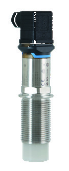

Fast Group Engineering cung cấp công tắc mức điện dung FTI26 Endress+Hauser chính hãng tại Việt Nam — đầy đủ chứng từ nhập khẩu, CO/CQ và bảo hành chính hãng.



Liên kết nên mở tiếp
Công tắc âm thoa Soliphant rất mạnh với hạt và bột thô, nhưng có một nhóm vật liệu khiến nó vất vả: bột cực mịn, nhẹ, dễ bám. Với những vật liệu này, một chạc âm thoa dễ bị bột phủ kín gây báo giả, hoặc bột quá nhẹ không đủ "tải" ngạc. Nivector FTI26 giải bằng nguyên lý khác — điện dung với mặt cảm biến phẳng (front-flush) — cùng khả năng bù bám dính, phù hợp đúng cho bột mịn, nhựa hạt nhỏ và thực phẩm khô.
Vì sao bột mịn cần điện dung compact
Nivector FTI26 có mặt cảm biến phẳng, gắn sát mặt bích (front-flush), không có ngạc hay hốc để bột đọng lại. Khi vật liệu chạm/phủ mặt cảm biến, điện dung thay đổi và thiết bị chuyển trạng thái. Mặt phẳng giúp vật liệu tự trượt, giảm bám; và vì không có bộ phận chuyển động hay ngạc nhô ra, nó lắp gọn ở silo nhỏ, cửa xả, ống dẫn bột. Một điểm thú vị: với silo nhựa mỏng, một số cấu hình đo được từ bên ngoài xuyên thành.
Thông số kỹ thuật quan trọng (theo tài liệu)
| Hạng mục | Giá trị (theo catalog/TI) |
|---|---|
| Nguyên lý | Điện dung (capacitance) — công tắc mức chất rắn |
| Điểm phát hiện | Từ 20 mm (front-flush) |
| Nhiệt độ quá trình | -20 đến +80 °C |
| Áp suất quá trình | -1 đến 6 bar |
| Kết nối quá trình | Ren G1A |
| Vật liệu tiếp xúc | PC, ECTFE |
| Đầu ra | AC; DC |
| Tính năng | Đo qua thành silo nhựa; tấm bảo vệ mài mòn |
| Phê duyệt | Ex vùng; vệ sinh |
Lưu ý biên tập: điểm phát hiện, vật liệu và khả năng đo xuyên thành phụ thuộc cấu hình đặt hàng và loại vật liệu. BẮT BUỘC đối chiếu TI theo mã đặt hàng và xác minh bù bám dính cho bột dính cụ thể.
Mặt cảm biến vật liệu ECTFE/PC vừa chống mài mòn vừa phù hợp một số ứng dụng vệ sinh — mở rộng phạm vi sang thực phẩm khô.
Khác biệt so với âm thoa (Soliphant) — chọn thế nào
| Tiêu chí | Nivector FTI26 (điện dung) | Soliphant FTM51 (âm thoa) |
|---|---|---|
| Vật liệu hợp nhất | Bột mịn, nhẹ, dễ bám | Hạt/bột thô, chảy tự do |
| Bộ phận nhô ra | Mặt phẳng, không ngạc | Ngạc âm thoa nhô vào |
| Bám dính | Bù bám dính điện tử | Chọn ngạc chống bám |
| Nhiệt độ | Đến +80 °C | Đến +280 °C |
| Silo cao/ống nối dài | Không | Có (tới 20 m) |
Nguyên tắc thực tế: bột mịn, nhẹ, dính, silo nhỏ → FTI26; hạt thô, silo cao, nhiệt độ cao → FTM51.
Kinh nghiệm lắp đặt & lỗi thường gặp
- Bù bám dính: với bột dính, kích hoạt/hiệu chỉnh bù bám dính để tránh báo "đầy" giả khi chỉ có lớp bám mỏng.
- Tránh dòng rơi trực tiếp: không đặt ngay dưới cửa nạp để tránh báo giả và mài mòn mặt cảm biến.
- Kết nối flush đúng: lắp mặt cảm biến ngang thành để vật liệu tự trượt, không tạo hốc đọng.
- Kiểm tra vật liệu dẫn/cách điện: hiệu chỉnh theo tính chất điện của bột; bột ẩm (dẫn điện) và bột khô (cách điện) cần cân chỉnh khác.
Ưu điểm, hạn chế, khi nào KHÔNG dùng
Ưu điểm: lý tưởng cho bột mịn/nhẹ/dính; mặt phẳng chống đọng; bù bám dính; compact, không bộ phận chuyển động; một số cấu hình đo xuyên thành silo nhựa.
Hạn chế / không phù hợp: nhiệt độ giới hạn ≤ +80 °C; không có ống nối dài cho silo cao; phụ thuộc tính chất điện môi vật liệu. Hạt thô/silo cao/nhiệt cao → Soliphant FTM51; cần đo mức liên tục → radar FMR62B.
Hiệu quả kinh tế (TCO)
Với bột mịn, chọn sai công tắc dẫn tới báo giả liên tục — dừng cấp liệu nhầm, hoặc tệ hơn là tràn/cạn không được báo. FTI26 dùng đúng cho nhóm vật liệu này giúp báo mức ổn định, gần như không bảo trì. Chi phí thấp và độ tin cậy cho bột mịn là điểm mạnh TCO của nó.
FastGroup hỗ trợ gì
FastGroup cung cấp thiết bị Endress+Hauser chính hãng tại Việt Nam. Với Nivector FTI26, chúng tôi hỗ trợ: tư vấn chọn giữa điện dung và âm thoa theo loại vật liệu, cấu hình bù bám dính cho bột dính, đối chiếu datasheet TI theo mã đặt hàng, hỗ trợ nhập khẩu và cung cấp CO/CQ theo từng đơn hàng.
Kết luận & liên hệ
Cho bột mịn, nhựa hạt nhỏ và thực phẩm khô, Nivector FTI26 là công tắc báo mức điện dung gọn và tin cậy. Để chọn đúng cấu hình và bù bám dính — cùng báo giá chính hãng — liên hệ FastGroup.
Câu hỏi thường gặp (FAQ)
1. FTI26 hay Soliphant FTM51? Bột mịn/nhẹ/dính, silo nhỏ → FTI26; hạt thô, silo cao, nhiệt cao → FTM51.
2. Có đo xuyên thành silo nhựa được không? Một số cấu hình đo được qua thành silo nhựa mỏng — kiểm tra TI theo ứng dụng.
3. Bột dính có gây báo giả không? Có thể — dùng bù bám dính để tránh báo "đầy" giả do lớp bám mỏng.
4. Chịu nhiệt tối đa bao nhiêu? Tới +80 °C; nóng hơn thì dùng Soliphant FTM51.
5. Cần đo mức liên tục thì dùng gì? Dùng radar FMR62B hoặc GWR FMP56.
Nguồn tham khảo
- Endress+Hauser – Point level detection (CP00007F00EN1925)
- Endress+Hauser – Technical Information (TI) Nivector FTI26, endress.com (đối chiếu theo mã đặt hàng)
Nhận báo giá Endress+Hauser chính hãng
Gửi mã model, điều kiện quá trình, kết nối và yêu cầu chứng nhận qua email minhduc@fastgroup.vn hoặc Zalo/điện thoại (+84) 938 888 958. Hoặc gửi RFQ qua biểu mẫu và tra mã model trực tiếp trên trang.